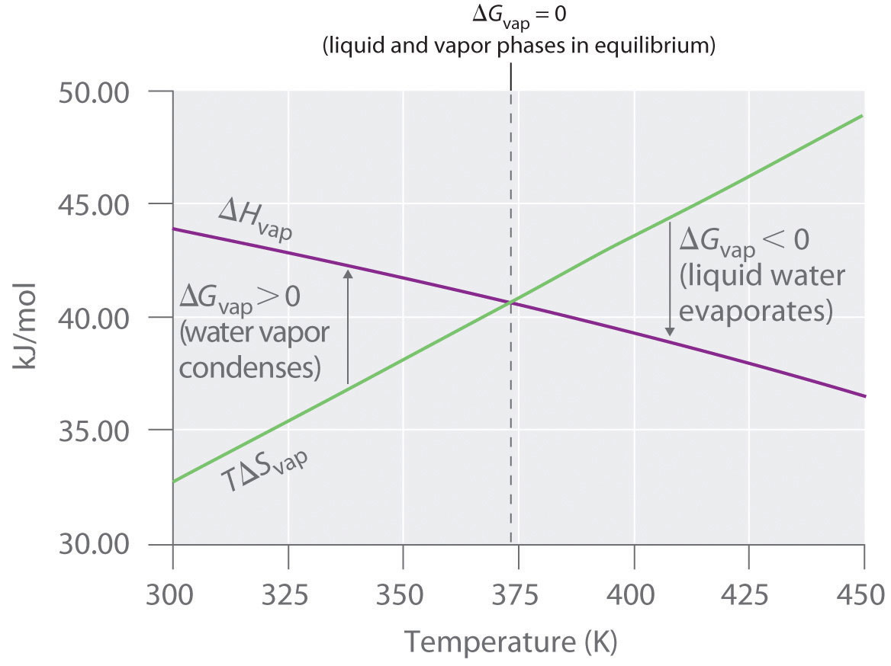

One of the major goals of chemical thermodynamics is to establish criteria for predicting whether a particular reaction or process will occur spontaneously. We have developed one such criterion, the change in entropy of the universe: if ΔSuniv > 0 for a process or a reaction, then the process will occur spontaneously as written. Conversely, if ΔSuniv < 0, a process cannot occur spontaneously; if ΔSuniv = 0, the system is at equilibrium. The sign of ΔSuniv is a universally applicable and infallible indicator of the spontaneity of a reaction. Unfortunately, using ΔSuniv requires that we calculate ΔS for both a system and its surroundings. This is not particularly useful for two reasons: we are normally much more interested in the system than in the surroundings, and it is difficult to make quantitative measurements of the surroundings (i.e., the rest of the universe). A criterion of spontaneity that is based solely on the state functions of a system would be much more convenient and is provided by a new state function: the Gibbs free energy.
The Gibbs free energy (G)A state function that is defined in terms of three other state functions—namely, enthalpy entropy and temperature , often called simply free energy, was named in honor of J. Willard Gibbs (1838–1903), an American physicist who first developed the concept. It is defined in terms of three other state functions with which you are already familiar: enthalpy, temperature, and entropy:
Equation 18.22
G = H − TSBecause it is a combination of state functions, G is also a state function.
Born in Connecticut, Josiah Willard Gibbs attended Yale, as did his father, a professor of sacred literature at Yale, who was involved in the Amistad trial. In 1863, Gibbs was awarded the first engineering doctorate granted in the United States. He was appointed professor of mathematical physics at Yale in 1871, the first such professorship in the United States. His series of papers entitled “On the Equilibrium of Heterogeneous Substances” was the foundation of the field of physical chemistry and is considered one of the great achievements of the 19th century. Gibbs, whose work was translated into French by Le Châtelier, lived with his sister and brother-in-law until his death in 1903, shortly before the inauguration of the Nobel Prizes.
The criterion for predicting spontaneity is based on ΔG, the change in G, at constant temperature and pressure. Although very few chemical reactions actually occur under conditions of constant temperature and pressure, most systems can be brought back to the initial temperature and pressure without significantly affecting the value of thermodynamic state functions such as G. At constant temperature and pressure,
Equation 18.23
ΔG = ΔH − TΔSwhere all thermodynamic quantities are those of the system. Recall that at constant pressure, ΔH = q, whether a process is reversible or irreversible, and TΔS = qrev. Using these expressions, we can reduce Equation 18.23 to ΔG = q − qrev. Thus ΔG is the difference between the heat released during a process (via a reversible or an irreversible path) and the heat released for the same process occurring in a reversible manner. Under the special condition in which a process occurs reversibly, q = qrev and ΔG = 0. As we shall soon see, if ΔG is zero, the system is at equilibrium, and there will be no net change.
What about processes for which ΔG ≠ 0? To understand how the sign of ΔG for a system determines the direction in which change is spontaneous, we can rewrite Equation 18.15 (where qp = ΔH, Equation 18.11) as follows:
Equation 18.24
Thus the entropy change of the surroundings is related to the enthalpy change of the system. We have stated that for a spontaneous reaction, ΔSuniv > 0, so substituting we obtain
Multiplying both sides of the inequality by −T reverses the sign of the inequality; rearranging,
which is equal to ΔG (Equation 18.23). We can therefore see that for a spontaneous process, ΔG < 0.
The relationship between the entropy change of the surroundings and the heat gained or lost by the system provides the key connection between the thermodynamic properties of the system and the change in entropy of the universe. The relationship shown in Equation 18.23 allows us to predict spontaneity by focusing exclusively on the thermodynamic properties and temperature of the system. We predict that highly exothermic processes (ΔH << 0) that increase the disorder of a system (ΔSsys >> 0) would therefore occur spontaneously. An example of such a process is the decomposition of ammonium nitrate fertilizer. (This substance destroyed Texas City, Texas, in 1947; see Chapter 3 "Chemical Reactions", Section 3.3.1 "Interpreting Chemical Equations".) Ammonium nitrate was also used to destroy the Murrah Federal Building in Oklahoma City, Oklahoma, in 1995. For a system at constant temperature and pressure, we can summarize the following results:
To further understand how the various components of ΔG dictate whether a process occurs spontaneously, we now look at a simple and familiar physical change: the conversion of liquid water to water vapor. If this process is carried out at 1 atm and the normal boiling point of 100.00°C (373.15 K), we can calculate ΔG from the experimentally measured value of ΔHvap (40.657 kJ/mol). For vaporizing 1 mol of water, ΔH = 40,657 J, so the process is highly endothermic. From the definition of ΔS (Equation 18.15), we know that for 1 mol of water,
Hence there is an increase in the disorder of the system. At the normal boiling point of water,
The energy required for vaporization offsets the increase in disorder of the system. Thus ΔG = 0, and the liquid and vapor are in equilibrium, as is true of any liquid at its boiling point under standard conditions. (For more information on standard conditions, see Chapter 11 "Liquids".)
Now suppose we were to superheat 1 mol of liquid water to 110°C. The value of ΔG for the vaporization of 1 mol of water at 110°C, assuming that ΔH and ΔS do not change significantly with temperature, becomes
At 110°C, ΔG < 0, and vaporization is predicted to occur spontaneously and irreversibly.
We can also calculate ΔG for the vaporization of 1 mol of water at a temperature below its normal boiling point—for example, 90°C—making the same assumptions:
At 90°C, ΔG > 0, and water does not spontaneously convert to water vapor. When using all the digits in the calculator display in carrying out our calculations, ΔG110°C = 1090 J = −ΔG90°C, as we would predict. (For more information on using a calculator, see Essential Skills 1 in Chapter 1 "Introduction to Chemistry".)
ΔG = 0 only if ΔH = TΔS.
We can also calculate the temperature at which liquid water is in equilibrium with water vapor. Inserting the values of ΔH and ΔS into the definition of ΔG (Equation 18.23), setting ΔG = 0, and solving for T,
Thus ΔG = 0 at T = 373.15 K and 1 atm, which indicates that liquid water and water vapor are in equilibrium; this temperature is called the normal boiling point of water. At temperatures greater than 373.15 K, ΔG is negative, and water evaporates spontaneously and irreversibly. Below 373.15 K, ΔG is positive, and water does not evaporate spontaneously. Instead, water vapor at a temperature less than 373.15 K and 1 atm will spontaneously and irreversibly condense to liquid water. Figure 18.16 "Temperature Dependence of Δ" shows how the ΔH and TΔS terms vary with temperature for the vaporization of water. When the two lines cross, ΔG = 0, and ΔH = TΔS.
Figure 18.16 Temperature Dependence of ΔH and TΔS for the Vaporization of Water
Both ΔH and TΔS are temperature dependent, but the lines have opposite slopes and cross at 373.15 K at 1 atm, where ΔH = TΔS. Because ΔG = ΔH − TΔS, at this temperature ΔG = 0, indicating that the liquid and vapor phases are in equilibrium. The normal boiling point of water is therefore 373.15 K. Above the normal boiling point, the TΔS term is greater than ΔH, making ΔG < 0; hence, liquid water evaporates spontaneously. Below the normal boiling point, the ΔH term is greater than TΔS, making ΔG > 0. Thus liquid water does not evaporate spontaneously, but water vapor spontaneously condenses to liquid.
A similar situation arises in the conversion of liquid egg white to a solid when an egg is boiled. The major component of egg white is a protein called albumin, which is held in a compact, ordered structure by a large number of hydrogen bonds. Breaking them requires an input of energy (ΔH > 0), which converts the albumin to a highly disordered structure in which the molecules aggregate as a disorganized solid (ΔS > 0). At temperatures greater than 373 K, the TΔS term dominates, and ΔG < 0, so the conversion of a raw egg to a hard-boiled egg is an irreversible and spontaneous process above 373 K.
In the previous subsection, we learned that the value of ΔG allows us to predict the spontaneity of a physical or a chemical change. In addition, the magnitude of ΔG for a process provides other important information. The change in free energy (ΔG) is equal to the maximum amount of work that a system can perform on the surroundings while undergoing a spontaneous change (at constant temperature and pressure): ΔG = wmax. To see why this is true, let’s look again at the relationships among free energy, enthalpy, and entropy expressed in Equation 18.23. We can rearrange this equation as follows:
Equation 18.25
ΔH = ΔG + TΔSThis equation tells us that when energy is released during an exothermic process (ΔH < 0), such as during the combustion of a fuel, some of that energy can be used to do work (ΔG < 0), while some is used to increase the entropy of the universe (TΔS > 0). Only if the process occurs infinitely slowly in a perfectly reversible manner will the entropy of the universe be unchanged. (For more information on entropy and reversibility, see Section 18.4 "Entropy Changes and the Third Law of Thermodynamics".) Because no real system is perfectly reversible, the entropy of the universe increases during all processes that produce energy. As a result, no process that uses stored energy can ever be 100% efficient; that is, ΔH will never equal ΔG because ΔS has a positive value.
One of the major challenges facing engineers is to maximize the efficiency of converting stored energy to useful work or converting one form of energy to another. As indicated in Table 18.2 "Approximate Thermodynamic Efficiencies of Various Devices", the efficiencies of various energy-converting devices vary widely. For example, an internal combustion engine typically uses only 25%–30% of the energy stored in the hydrocarbon fuel to perform work; the rest of the stored energy is released in an unusable form as heat. In contrast, gas–electric hybrid engines, now used in several models of automobiles, deliver approximately 50% greater fuel efficiency. A large electrical generator is highly efficient (approximately 99%) in converting mechanical to electrical energy, but a typical incandescent light bulb is one of the least efficient devices known (only approximately 5% of the electrical energy is converted to light). In contrast, a mammalian liver cell is a relatively efficient machine and can use fuels such as glucose with an efficiency of 30%–50%.
Table 18.2 Approximate Thermodynamic Efficiencies of Various Devices
| Device | Energy Conversion | Approximate Efficiency (%) |
|---|---|---|
| large electrical generator | mechanical → electrical | 99 |
| chemical battery | chemical → electrical | 90 |
| home furnace | chemical → heat | 65 |
| small electric tool | electrical → mechanical | 60 |
| space shuttle engine | chemical → mechanical | 50 |
| mammalian liver cell | chemical → chemical | 30–50 |
| spinach cell | light → chemical | 30 |
| internal combustion engine | chemical → mechanical | 25–30 |
| fluorescent light | electrical → light | 20 |
| solar cell | light → electricity | 10 |
| incandescent light bulb | electricity → light | 5 |
| yeast cell | chemical → chemical | 2–4 |
We have seen that there is no way to measure absolute enthalpies, although we can measure changes in enthalpy (ΔH) during a chemical reaction. Because enthalpy is one of the components of Gibbs free energy, we are consequently unable to measure absolute free energies; we can measure only changes in free energy. The standard free-energy change (ΔG°)The change in free energy when one substance or a set of substances in their standard states is converted to one or more other sustances, also in their standard states: is the change in free energy when one substance or a set of substances in their standard states is converted to one or more other substances, also in their standard states. The standard free-energy change can be calculated from the definition of free energy, if the standard enthalpy and entropy changes are known, using Equation 18.26:
Equation 18.26
ΔG° = ΔH° − TΔS°If ΔS° and ΔH° for a reaction have the same sign, then the sign of ΔG° depends on the relative magnitudes of the ΔH° and TΔS° terms. It is important to recognize that a positive value of ΔG° for a reaction does not mean that no products will form if the reactants in their standard states are mixed; it means only that at equilibrium the concentrations of the products will be less than the concentrations of the reactants.
A positive ΔG° means that the equilibrium constant is less than 1.
Calculate the standard free-energy change (ΔG°) at 25°C for the reaction At 25°C, the standard enthalpy change (ΔH°) is −187.78 kJ/mol, and the absolute entropies of the products and reactants are S°(H2O2) = 109.6 J/(mol·K), S°(O2) = 205.2 J/(mol·K), and S°(H2) = 130.7 J/(mol·K). Is the reaction spontaneous as written?
Given: balanced chemical equation, ΔH° and S° for reactants and products
Asked for: spontaneity of reaction as written
Strategy:
A Calculate ΔS° from the absolute molar entropy values given.
B Use Equation 18.26, the calculated value of ΔS°, and other data given to calculate ΔG° for the reaction. Use the value of ΔG° to determine whether the reaction is spontaneous as written.
Solution:
A To calculate ΔG° for the reaction, we need to know ΔH°, ΔS°, and T. We are given ΔH°, and we know that T = 298.15 K. We can calculate ΔS° from the absolute molar entropy values provided using the “products minus reactants” rule:
As we might expect for a reaction in which 2 mol of gas is converted to 1 mol of a much more ordered liquid, ΔS° is very negative for this reaction.
B Substituting the appropriate quantities into Equation 18.26,
The negative value of ΔG° indicates that the reaction is spontaneous as written. Because ΔS° and ΔH° for this reaction have the same sign, the sign of ΔG° depends on the relative magnitudes of the ΔH° and TΔS° terms. In this particular case, the enthalpy term dominates, indicating that the strength of the bonds formed in the product more than compensates for the unfavorable ΔS° term and for the energy needed to break bonds in the reactants.
Exercise
Calculate the standard free-energy change (ΔG°) at 25°C for the reaction At 25°C, the standard enthalpy change (ΔH°) is 50.6 kJ/mol, and the absolute entropies of the products and reactants are S°(N2H4) = 121.2 J/(mol·K), S°(N2) = 191.6 J/(mol·K), and S°(H2) = 130.7 J/(mol·K). Is the reaction spontaneous as written?
Answer: 149.5 kJ/mol; no
Tabulated values of standard free energies of formation allow chemists to calculate the values of ΔG° for a wide variety of chemical reactions rather than having to measure them in the laboratory. The standard free energy of formation The change in free energy that occurs when 1 mol of a substance in its standard state is formed from the component elements in their standard states: of a compound is the change in free energy that occurs when 1 mol of a substance in its standard state is formed from the component elements in their standard states. By definition, the standard free energy of formation of an element in its standard state is zero at 298.15 K. One mole of Cl2 gas at 298.15 K, for example, has = 0. The standard free energy of formation of a compound can be calculated from the standard enthalpy of formation and the standard entropy of formation using the definition of free energy:
Equation 18.27
Using standard free energies of formation to calculate the standard free energy of a reaction is analogous to calculating standard enthalpy changes from standard enthalpies of formation using the familiar “products minus reactants” rule:
Equation 18.28
where m and n are the stoichiometric coefficients of each product and reactant in the balanced chemical equation. A very large negative ΔG° indicates a strong tendency for products to form spontaneously from reactants; it does not, however, necessarily indicate that the reaction will occur rapidly. To make this determination, we need to evaluate the kinetics of the reaction. (For more information on chemical kinetics, see Chapter 14 "Chemical Kinetics".)
The ΔG° of a reaction can be calculated from tabulated values using the “products minus reactants” rule.
Calculate ΔG° for the reaction of isooctane with oxygen gas to give carbon dioxide and water (described in Example 7). Use the following data:
(isooctane) = −353.2 kJ/mol,
(CO2) = −394.4 kJ/mol, and
(H2O) = −237.1 kJ/mol. Is the reaction spontaneous as written?
Given: balanced chemical equation and values of for isooctane, CO2, and H2O
Asked for: spontaneity of reaction as written
Strategy:
Use the “products minus reactants” rule to obtain , remembering that for an element in its standard state is zero. From the calculated value, determine whether the reaction is spontaneous as written.
Solution:
From Example 7, we know that the balanced chemical equation for the reaction is as follows: We are given values for all the products and reactants except O2(g). Because oxygen gas is an element in its standard state, (O2) is zero. Using the “products minus reactants” rule,
Because ΔG° is a large negative number, there is a strong tendency for the spontaneous formation of products from reactants (though not necessarily at a rapid rate). Also notice that the magnitude of ΔG° is largely determined by the of the stable products: water and carbon dioxide.
Exercise
Calculate ΔG° for the reaction of benzene with hydrogen gas to give cyclohexane using the data
(benzene) = 124.5 kJ/mol and
(cyclohexane) = 217.3 kJ/mol. Is the reaction spontaneous as written?
Answer: 92.8 kJ; no
Calculated values of ΔG° are extremely useful in predicting whether a reaction will occur spontaneously if the reactants and products are mixed under standard conditions. We should note, however, that very few reactions are actually carried out under standard conditions, and calculated values of ΔG° may not tell us whether a given reaction will occur spontaneously under nonstandard conditions. What determines whether a reaction will occur spontaneously is the free-energy change (ΔG) under the actual experimental conditions, which are usually different from ΔG°. If the ΔH and TΔS terms for a reaction have the same sign, for example, then it may be possible to reverse the sign of ΔG by changing the temperature, thereby converting a reaction that is not thermodynamically spontaneous, having Keq < 1, to one that is, having a Keq > 1, or vice versa. Because ΔH and ΔS usually do not vary greatly with temperature in the absence of a phase change, we can use tabulated values of ΔH° and ΔS° to calculate ΔG° at various temperatures, as long as no phase change occurs over the temperature range being considered.
In the absence of a phase change, neither ΔH nor ΔS vary greatly with temperature.
Calculate (a) ΔG° and (b) ΔG300°C for the reaction assuming that ΔH and ΔS do not change between 25°C and 300°C. Use these data:
S°(N2) = 191.6 J/(mol·K),
S°(H2) = 130.7 J/(mol·K),
S°(NH3) = 192.8 J/(mol·K), and
(NH3) = −45.9 kJ/mol.
Given: balanced chemical equation, temperatures, S° values, and for NH3
Asked for: ΔG° and ΔG at 300°C
Strategy:
A Convert each temperature to kelvins. Then calculate ΔS° for the reaction. Calculate ΔH° for the reaction, recalling that for any element in its standard state is zero.
B Substitute the appropriate values into Equation 18.26 to obtain ΔG° for the reaction.
C Assuming that ΔH and ΔS are independent of temperature, substitute values into Equation 18.23 to obtain ΔG for the reaction at 300°C.
Solution:
A To calculate ΔG° for the reaction using Equation 18.26, we must know the temperature as well as the values of ΔS° and ΔH°. At standard conditions, the temperature is 25°C, or 298 K. We can calculate ΔS° for the reaction from the absolute molar entropy values given for the reactants and the products using the “products minus reactants” rule:
We can also calculate ΔH° for the reaction using the “products minus reactants” rule. The value of (NH3) is given, and is zero for both N2 and H2:
B Inserting the appropriate values into Equation 18.26,
C To calculate ΔG for this reaction at 300°C, we assume that ΔH and ΔS are independent of temperature (i.e., ΔH300°C = H° and ΔS300°C = ΔS°) and insert the appropriate temperature (573 K) into Equation 18.23:
In this example, changing the temperature has a major effect on the thermodynamic spontaneity of the reaction. Under standard conditions, the reaction of nitrogen and hydrogen gas to produce ammonia is thermodynamically spontaneous, but in practice, it is too slow to be useful industrially. Increasing the temperature in an attempt to make this reaction occur more rapidly also changes the thermodynamics by causing the −TΔS° term to dominate, and the reaction is no longer spontaneous at high temperatures; that is, its Keq is less than one. This is a classic example of the conflict encountered in real systems between thermodynamics and kinetics, which is often unavoidable.
Exercise
Calculate (a) ΔG° and (b) ΔG750°C for the reaction which is important in the formation of urban smog. Assume that ΔH and ΔS do not change between 25.0°C and 750°C and use these data:
S°(NO) = 210.8 J/(mol·K),
S°(O2) = 205.2 J/(mol·K),
S°(NO2) = 240.1 J/(mol·K),
(NO2) = 33.2 kJ/mol, and
(NO) = 91.3 kJ/mol.
Answer
The effect of temperature on the spontaneity of a reaction, which is an important factor in the design of an experiment or an industrial process, depends on the sign and magnitude of both ΔH° and ΔS°. The temperature at which a given reaction is at equilibrium can be calculated by setting ΔG° = 0 in Equation 18.26, as illustrated in Example 11.
As you saw in Example 10, the reaction of nitrogen and hydrogen gas to produce ammonia is one in which ΔH° and ΔS° are both negative. Such reactions are predicted to be thermodynamically spontaneous at low temperatures but nonspontaneous at high temperatures. Use the data in Example 10 to calculate the temperature at which this reaction changes from spontaneous to nonspontaneous, assuming that ΔH° and ΔS° are independent of temperature.
Given: ΔH° and ΔS°
Asked for: temperature at which reaction changes from spontaneous to nonspontaneous
Strategy:
Set ΔG° equal to zero in Equation 18.26 and solve for T, the temperature at which the reaction becomes nonspontaneous.
Solution:
In Example 10, we calculated that ΔH° is −91.8 kJ/mol of N2 and ΔS° is −198.1 J/K per mole of N2, corresponding to ΔG° = −32.7 kJ/mol of N2 at 25°C. Thus the reaction is indeed spontaneous at low temperatures, as expected based on the signs of ΔH° and ΔS°. The temperature at which the reaction becomes nonspontaneous is found by setting ΔG° equal to zero and rearranging Equation 18.26 to solve for T:
This is a case in which a chemical engineer is severely limited by thermodynamics. Any attempt to increase the rate of reaction of nitrogen with hydrogen by increasing the temperature will cause reactants to be favored over products above 463 K.
Exercise
As you found in the exercise in Example 10, ΔH° and ΔS° are both negative for the reaction of nitric oxide and oxygen to form nitrogen dioxide. Use those data to calculate the temperature at which this reaction changes from spontaneous to nonspontaneous.
Answer: 792.6 K
We can predict whether a reaction will occur spontaneously by combining the entropy, enthalpy, and temperature of a system in a new state function called Gibbs free energy (G). The change in free energy (ΔG) is the difference between the heat released during a process and the heat released for the same process occurring in a reversible manner. If a system is at equilibrium, ΔG = 0. If the process is spontaneous, ΔG < 0. If the process is not spontaneous as written but is spontaneous in the reverse direction, ΔG > 0. At constant temperature and pressure, ΔG is equal to the maximum amount of work a system can perform on its surroundings while undergoing a spontaneous change. The standard free-energy change (ΔG°) is the change in free energy when one substance or a set of substances in their standard states is converted to one or more other substances, also in their standard states. The standard free energy of formation (), is the change in free energy that occurs when 1 mol of a substance in its standard state is formed from the component elements in their standard states. Tabulated values of standard free energies of formation are used to calculate ΔG° for a reaction.
Free-energy change
Equation 18.23: ΔG = ΔH − TΔS
Standard free-energy change
Equation 18.26: ΔG° = ΔH° − TΔS°
How does each example illustrate the fact that no process is 100% efficient?
Neither the change in enthalpy nor the change in entropy is, by itself, sufficient to determine whether a reaction will occur spontaneously. Why?
If a system is at equilibrium, what must be the relationship between ΔH and ΔS?
The equilibrium is exothermic in the forward direction. Which has the higher entropy—the products or the reactants? Why? Which is favored at high temperatures?
Is ΔG a state function that describes a system or its surroundings? Do its components—ΔH and ΔS—describe a system or its surroundings?
How can you use ΔG to determine the temperature of a phase transition, such as the boiling point of a liquid or the melting point of a solid?
Occasionally, an inventor claims to have invented a “perpetual motion” machine, which requires no additional input of energy once the machine has been put into motion. Using your knowledge of thermodynamics, how would you respond to such a claim? Justify your arguments.
Must the entropy of the universe increase in a spontaneous process? If not, why is no process 100% efficient?
The reaction of methyl chloride with water produces methanol and hydrogen chloride gas at room temperature, despite the fact that = 7.3 kcal/mol. Using thermodynamic arguments, propose an explanation as to why methanol forms.
In order for the reaction to occur spontaneously, ΔG for the reaction must be less than zero. In this case, ΔS must be positive, and the TΔS term outweighs the positive value of ΔH.
Use the tables in the text to determine whether each reaction is spontaneous under standard conditions. If a reaction is not spontaneous, write the corresponding spontaneous reaction.
Use the tables in the text to determine whether each reaction is spontaneous under standard conditions. If a reaction is not spontaneous, write the corresponding spontaneous reaction.
Nitrogen fixation is the process by which nitrogen in the atmosphere is reduced to NH3 for use by organisms. Several reactions are associated with this process; three are listed in the following table. Which of these are spontaneous at 25°C? If a reaction is not spontaneous, at what temperature does it become spontaneous?
| Reaction | (kcal/mol) | [cal/(°·mol)] |
|---|---|---|
| (a) | 8.0 | −14.4 |
| (b) | 21.6 | 2.9 |
| (c) | −11.0 | −23.7 |
A student was asked to propose three reactions for the oxidation of carbon or a carbon compound to CO or CO2. The reactions are listed in the following table. Are any of these reactions spontaneous at 25°C? If a reaction does not occur spontaneously at 25°C, at what temperature does it become spontaneous?
| Reaction | (kcal/mol) | [cal/(°·mol)] |
|---|---|---|
| C(s) + H2O(g) → CO(g) + H2(g) | 42 | 32 |
| CO(g) + H2O(g) → CO2(g) + H2(g) | −9.8 | −10.1 |
| CH4(g) + H2O(g) → CO(g) + 3H2(g) | 49.3 | 51.3 |
Tungsten trioxide (WO3) is a dense yellow powder that, because of its bright color, is used as a pigment in oil paints and water colors (although cadmium yellow is more commonly used in artists’ paints). Tungsten metal can be isolated by the reaction of WO3 with H2 at 1100°C according to the equation WO3(s) + 3H2(g) → W(s) + 3H2O(g). What is the lowest temperature at which the reaction occurs spontaneously? ΔH° = 27.4 kJ/mol and ΔS° = 29.8 J/K.
Sulfur trioxide (SO3) is produced in large quantities in the industrial synthesis of sulfuric acid. Sulfur dioxide is converted to sulfur trioxide by reaction with oxygen gas.
Calculate ΔG° for the general reaction MCO3(s) → MO(s) + CO2(g) at 25°C, where M is Mg or Ba. At what temperature does each of these reactions become spontaneous?
| Compound | (kJ/mol) | S° [J/(mol·K)] |
|---|---|---|
| MCO 3 | ||
| Mg | −1111 | 65.85 |
| Ba | −1213.0 | 112.1 |
| MO | ||
| Mg | −601.6 | 27.0 |
| Ba | −548.0 | 72.1 |
| CO 2 | −393.5 | 213.8 |
The reaction of aqueous solutions of barium nitrate with sodium iodide is described by the following equation:
Ba(NO3)2(aq) + 2NaI(aq) → BaI2(aq) + 2NaNO3(aq)You want to determine the absolute entropy of BaI2, but that information is not listed in your tables. However, you have been able to obtain the following information:
| Ba(NO3)2 | NaI | BaI2 | NaNO3 | |
|---|---|---|---|---|
| (kJ/mol) | −952.36 | −295.31 | −605.4 | −447.5 |
| S° [J/(mol·K)] | 302.5 | 170.3 | 205.4 |
You know that ΔG° for the reaction at 25°C is 22.64 kJ/mol. What is ΔH° for this reaction? What is S° for BaI2?
919 K
MgCO3: ΔG° = 63 kJ/mol, spontaneous above 663 K; BaCO3: ΔG° = 220 kJ/mol, spontaneous above 1562 K